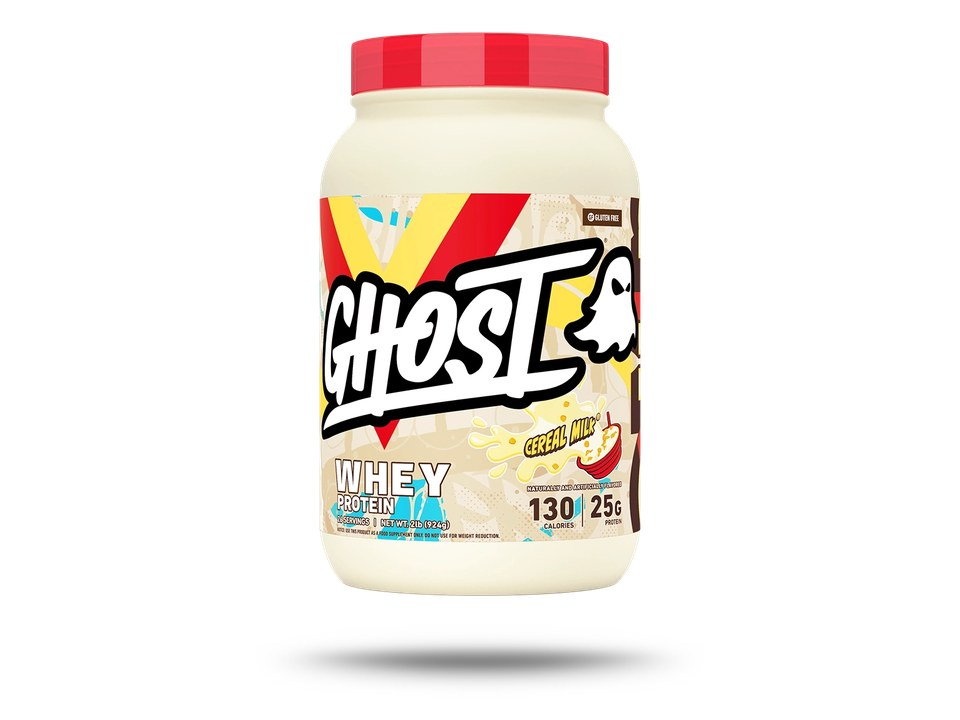

Product imagery supplied by the retailer. Packaging may vary — verify the Supplement Facts panel on the container you receive.
Ghost
Whey Protein
Our analysis — editorial take, not from the label
Protein holds at 25 g across the range; almost nothing else does. Cereal Milk is a 2 lb (924 g) tub on a 35 g scoop, Chocolate Chip Cookies a 2.2 lb (1014 g) tub on a 39 g one — the tub grows with the scoop, and the extra weight goes to the licensed inclusions rather than to whey.
- Protein
- 25 g
- Protein by weight
- 71%
- Source
- whey isolate, concentrate, and hydrolysate blend
- Servings
- 26
Price tier: Premium · relative cost per full serving across this database
We don't list dollar prices — they change daily and go stale. Check the live price instead:
View current price at Amazon Compare all protein powdersScoop Sense doesn't collect user reviews and won't invent them. Read customer reviews on Amazon
Affiliate links — Scoop Sense may earn a commission at no additional cost to you.
Nine flavors, most of them licensed cereal and dessert collaborations (Lucky Charms Cereal Milk, Cocoa Puffs, Trix, Cinnabon, Chocolate Chip Cookies) alongside plain Cereal Milk, Milk Chocolate and Coffee Ice Cream; sucralose is the only high-intensity sweetener listed.
Label verified: September 2026 · View label source
Label data
Per full serving · 26 servings per container · from the manufacturer's panel
| Protein per serving | 25 g |
|---|---|
| Serving size | 35 g |
| Protein per scoop | 71% |
| Calories | Not recorded |
| Total carbohydrate | Not recorded |
| Total fat | Not recorded |
| Source | whey isolate, concentrate, and hydrolysate blend |
| Sweetener | sucralose |
| Whey protein blend (whey isolate, whey concentrate, hydrolyzed whey isolate) | 25 g |
| Digestive enzymes (proteases, bromelain, lactase) | amount not stated on label |
| Sucralose | amount not stated on label |
| Proprietary blend | Total only — source ratio undisclosed |
Primary label source: GHOST — WHEY product page (Lucky Charms Cereal Milk and Chocolate Chip Cookies Nutrition Facts panels and ingredient lists) · verified September 2026
Cautions
- Contains milk — the blend is whey isolate, concentrate and hydrolyzed isolate
- Scoop weight and added sugar move by flavor: Lucky Charms Cereal Milk is a 35 g scoop at 130 calories, Chocolate Chip Cookies a 39 g scoop at 150, both with 2 g added sugar — Trix is a 33.5 g scoop with none
- Brand product page carries a California Prop 65 lead-exposure notice
Formulated for healthy adults — not intended for anyone under 18. Full health & safety notes
Product details
Where this label sits
Ghost Whey Protein is one of the protein powders in the Scoop Sense database. The label uses at least one proprietary blend, so a blend total stands in place of the individual amounts inside it. It runs 26 servings per container at the full labeled serving. Everything on this page comes from the manufacturer's supplement facts panel as of September 2026 — never from the marketing page.
Key ingredients & studied doses
- Whey protein blend (whey isolate, whey concentrate, hydrolyzed whey isolate) · 25 g. Isolate is listed first and the hydrolysate last, and 25 g per scoop sits inside the 20–40 g per-serving range used in muscle protein synthesis research.
- Digestive enzymes (proteases, bromelain, lactase) · amount not stated on label. Lactase is the enzyme that acts on lactose, but the label prints no enzyme weight or activity unit, so the amount cannot be compared to research doses.
- Sucralose · amount not stated on label. The only high-intensity sweetener in the ingredient list; the 2 g of added sugar on the collab panels comes from the cereal and cookie inclusions, not from the protein blend.
Flavors & sweetener
Nine flavors, most of them licensed cereal and dessert collaborations (Lucky Charms Cereal Milk, Cocoa Puffs, Trix, Cinnabon, Chocolate Chip Cookies) alongside plain Cereal Milk, Milk Chocolate and Coffee Ice Cream; sucralose is the only high-intensity sweetener listed.
Who it's best for
A standard-ratio powder — fine as a food supplement when total daily protein is what matters. Skip it if you want every individual dose disclosed on the label. Derived from the label figures above — not medical advice.
How we log this label
Every entry is built the same way: we read the current supplement facts panel, log each disclosed dose, compare it against the amounts used in published research, flag proprietary blends, and state the cautions plainly. The full methodology explains each step.
This label against the research
How we evaluate labelsEach bar shows the amount commonly used in published human research, and where this label's dose falls against it. Research amounts are context, not a recommendation — they are not doses, and nothing here is medical advice. The bars compare what the label states; we do not laboratory-test the product to confirm it.
-
Protein25 g
At or above the studied amount0studied range 20 g–40 g50 g
Per-meal doses studied for muscle protein synthesis run about 20–40 g of high-quality protein, with the upper half of that range favoured for larger athletes and older adults.
Source: Jäger et al., Journal of the International Society of Sports Nutrition 2017 — “General recommendations are 0.25 g of a high-quality protein per kg of body weight, or an absolute dose of 20–40 g.”
One or more amounts on this label sit inside a proprietary blend, so the individual doses behind the blend total cannot be compared at all.
Common questions about Ghost Whey Protein
How much of a Ghost Whey Protein scoop is actually protein?
25 g of protein from a 35 g serving — about 71%. The rest is flavoring, fats, carbs, and whatever else the label lists. A higher percentage means less filler per scoop.
What does the proprietary blend in Ghost Whey Protein hide?
The Whey protein blend (whey isolate, whey concentrate, hydrolyzed whey isolate) lists 25 g as a combined total. A blend total tells you the sum of its ingredients, not the individual doses inside it — which is why blend entries can't be checked against studied amounts.
Do the numbers for Ghost Whey Protein assume one scoop or two?
All figures on this page are per full labeled serving. Scoop weight and added sugar move by flavor: Lucky Charms Cereal Milk is a 35 g scoop at 130 calories, Chocolate Chip Cookies a 39 g scoop at 150, both with 2 g added sugar — Trix is a 33.5 g scoop with none.